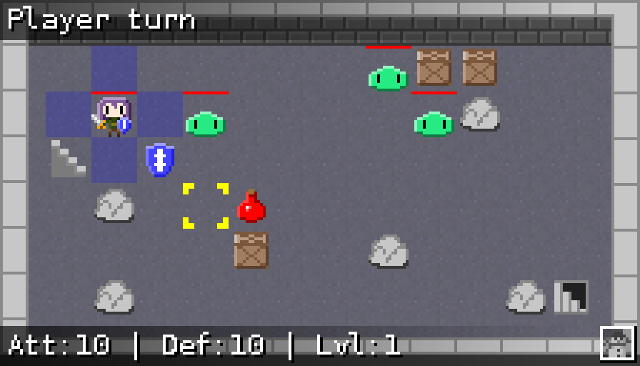
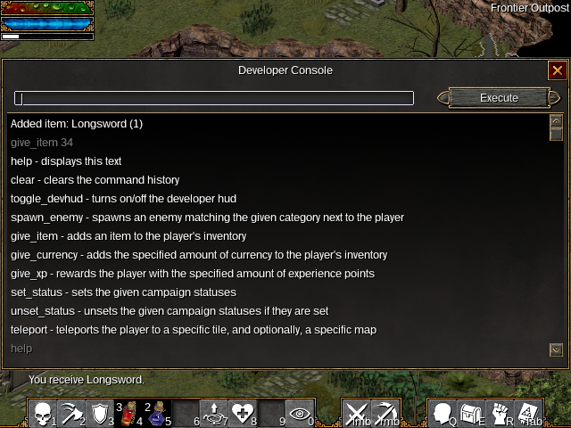

2014/12/09 10:02:52

This past weekend, I participated in my first Ludum Dare. In preparation, I had put together a simple framework of an engine using SDL 2. The framework provided simple things, like easily loading and using static images, animations, and sounds. The jam itself was quite a challenge, but it was also a lot of fun.
The game, entitled "Noman's Dungeon", is up here on the Ludum Dare website. I've also put together a time-lapse video of the entire development process, which you can watch here on Youtube. What I'd like to do now is give a post-mortem on how the whole thing went.
I initially spent the first hour brainstorming ideas that fit with the "entire game on one screen" theme. After tossing around some ideas like a 1v1 tank battle game and a puzzle/platformer like Solomon's Key, I settled on a turn-based rogue-like. I had thought of such a game in the past, so this felt like a good opportunity to try it out. Here is the outline I ended up with:
- super-simple turn based rpg, srpg combat like Disgaea
- rogue-like; get "orb" at the end and return to the surface; permadeath;
- some rooms have enemies, some have treasures; only 1 room at a time (keep it on one screen)
- make battles tough, but give the option to run. Running means that you'll need to fight a stronger version of the enemy on the way back
- Items: swords (high dmg, low range), bows (low dmg, high range), armor, health potions; start with basic sword and bow
- Enemies: slimes (low range, high damage), archer skeleton (high range, low damage), goblin boss (high range, high damage)
- some tiles are trapped. Can be both positive and negative (hp restore, spike trap that does damage)
This outline felt doable in the 48 competition time frame. So how did it go?
What went right
- The art style. The comments I have received so far have been very positive about the artwork. I had not decided on the art style until around the end of the first day. At that point, I was feeling ready to start replacing the placeholder art. I had remembered a bullet point from the great Juice it or lose it talk: add eyes to things. I added some eyes to the slime monster, and everything snowballed from there.
- The turn-based system came out to be what I had originally envisioned.
- I succeeded in creating the win goal. The progression worked well: fight your way to the last floor, get the treasure, fight your way back to the top. The fight back to the top spawns more enemies than on the way down for increased challenge.
- I believe I stuck to the theme well enough. Even though the player is moving through randomly generated rooms, all of them are ultimately the same rectangular room.
- Something that almost didn't make it in time were the rocks and crates that litter each room. They add a much needed variety to each level.
- Using the framework I had already created saved a lot of potential headaches (with a few exceptions I'll explain later).
- My work pace throughout the weekend was pretty much on point. Where this was my first Ludum Dare, I was worried I wouldn't have a functional game by the end.
- The game's actually a little fun. Can't ask for much more than that.
What went wrong
- While my framework saved me some time, there were a few bugs that popped up. Most notably was that my image reference counts were incorrect when used in animations. I actually needed to fix that one twice, since my initial fix wasn't complete. Fixing those bugs ate more time than I should have spent on such things.
- The game is too easy, so there's no benefit to running. The game was initially way too difficult, but I over-corrected in the opposite direction. I simply didn't have enough time to play with balancing the combat numbers. However, it's possible that making the game easy was the right choice, since it meant more people could see the whole game. To me, that's better than the players dying a bunch and getting frustrated.
- No enemy variety. Although they have slightly randomized stats, it is just slimes for the whole game. That's only 1/3 of the enemy types I had originally planned.
- No bows. It would have been nice to have an alternative attack method, perhaps with finite ammunition.
- While not very important, there were no traps. That would have been something interesting for the player to encounter and would have added variety.
- I feel that having the player (and slimes) only move 1 tile per turn doesn't provide a lot of tactical options.
- I could only provide Linux and Windows builds. Although it should be relatively easy to build on Mac OS X, it would have been nice to be able to provide a pre-built package for those people. Something I'd like to do in the future (not for a game jam) is create a web version of the game, so anyone with a modern web browser could play. I've never done any HTML canvas and Javascript in the context of a game, so I'll probably be looking at Clint Bellanger's Heroine Dusk as a way of learning.
- While not something that's important in the context of a game jam, some of my code's structure is a bit poor. I ended up putting a lot of the game's logic in the MapEngine class, where it didn't really belong. Sorting out that structure is something I want to do before working on a port to another language.
- During the process, I want to make it so that entities "tweened" when moving between positions, but my movement system made that too difficult to implement in a reasonable amount of time.
So where do I go from here? I have a fun little game that's begging for some balancing and some more content. A lot of the things myself and others found to be problems with the game are simply results of having a limited amount of time. I think it's something that I want to continue working on, even though the jam is over. Maybe it will turn into something really cool one day.
2014/10/10 14:53:17
The past month or so has been pretty good for Flare development. Many crashes, memory leaks, and bugs were reported and fixed. Many of the bugs revolved around poor handling of items, which was causing items to disappear in some cases. The crashes were mostly just us not respecting array bounds, and were introduced fairly recently. The memory leaks, on the other hand, turned out to be long-standing problems. Who knew that every instance of WidgetLabel (most places where there is text) was leaking memory?
The other major memory leak was known for a long time, so I feel like going into a bit of detail. Map events have the ability to cast powers (e.g. the trapped chests in the Brothers' Lair). In order to cast these powers, we were creating a StatBlock that was attached to the event. The problem was that the event could be deleted while the power was still active, resulting in the StatBlock leaking. The solution was to determine ahead of time which events will need StatBlocks, and allocate them in an array attached to the Map class itself.
It hasn't all been scrambling to fix stuff, though. We've also had time to work on some new features. The loot system got a bit of reworking, so it is now possible to define loot tables in separate files instead of having to define loot inline. This is handy because we can re-use loot tables in multiple places. The best part is that we can mix these loot files with inline loot definitions to add lots of variety.
Also related to loot, we've added the ability for powers to drop loot. One of the more interesting ideas that was tossed around was the idea of a thief class that can punch the gold out of enemies. Clint also pointed out that powers that require an item and drop a different item is a simple version of crafting.
Igor has been very helpful in continuing work on the Android port. A lot of the work here involved re-thinking input to work with touchscreens. Many things we take for granted when using a mouse, like hovering over icons to see tooltips, had to be changed. Our solution for that case was to display tooltips on the first tap, followed by the regular "left-click" action on the second tap. During this whole process, we were even able to improve some things on the mouse/keyboard side of things, like being able to pick a target for some powers after activating from the action bar.
Finally, we merged the SDL hardware renderer from flare-engine-next into upstream flare-engine. Aside from one minor issue, it looks identical to the software renderer. Of course, it is much faster than the software renderer because GPUs are just better equipped for handling graphics (go figure). Since this feature is upstream now, I hard reset the flare-engine-next repo to upstream, so please update your forks and local clones appropriately.
2014/08/11 20:30:41
In my last post, I mentioned the plan for a developer menu for Flare. I created an implementation of my idea, but it wasn't very flexible when it came to adding functionality. It also added more than an acceptable amount of code to the MenuManager class (which is already messy). As an alternative, I started working on a developer console.

The end result is something that has more functionality, like being able to specify level range for "spawn_enemy". In addition, the majority of code for the developer menu resides in the MenuDevConsole class itself, as opposed to MenuManager.
I don't regret spending time on the original developer menu. During the process, I ended up looking at my 2-year-old code for WidgetListBox, which was overall poor in quality. I'm also glad that things shifted towards a developer console, since it got me to look at how to draw text items in a WidgetScrollBox. I was able to refactor out the code from MenuLog into a new WidgetLog class, which is then used in MenuLog and MenuDevConsole. Implementing new features isn't just stacking blocks on top of each other. It sometimes forces you to take a step back and look at the base of what you've built.
Moving on, I also spent a bit of time trying to improve how targeting enemies works. It's a common complaint we've been getting, and it's usually due to the fact that melee attacks are using aimassist. In the context of Flare, aimassist is used to target attacks on the ground (where the enemy hitbox actually is) when aiming at the chest of a human-sized enemy. This works for projectile attacks, since it makes the projectile fly directly through the cursor. In order to get a better idea of what was happening with targeting, I made it so that a "target" animation is drawn on the ground where the target actually is. Having such an animation makes combat feel much more solid, since it's more clear where attacks are actually landing.
The next order of business was to sort out melee attacks. Turning off aim_assist for these attacks made them work as expected with short enemies, like antlion hatchlings and goblins. However, there was still the issue of trying to attack larger enemies. If the player clicked on the head of a zombie, their attack would land above the zombie's hitbox. The solution I came up with was to implement some auto-aim for melee attacks. We already determine the enemy under the mouse cursor for MenuEnemy, so we can use the position of that enemy as the target of the melee attack.
Well, enough about Flare. I was somehow able to find time to fix an FFmpeg crash I had encountered. After updating FFmpeg from 1:2.2.5 to 1:2.3.1, SpaceFM was crashing when generating thumbnails for my episodes of Nichijou. The crash was happening because a bit of new code was trying to read Matroska chapter data even if the chapter data wasn't created (in my case, due to a broken chapter in the last episode). So a simple NULL-check did the trick. I'm now just waiting for the patch to get reviewed on the ffmpeg-devel mailing list.
EDIT: Turns out my patch was merged 3 days prior to this post, and I didn't notice since my tiny brain couldn't handle the concept of a mailing list.
2014/08/01 19:32:05
I've been a little inactive for the past week. I lost my internet connection for a few days, so I got into playing some single-player games in my free time instead of working. However, I think I'm ready to get back into the swing of things. Today, I outlined my idea for a developer menu to add to Flare. I think it will make creating and iterating on the Empyrean campaign easier once it's implemented.
2014/07/22 20:13:48
So Clint filled me in on his plans for the Empyrean campaign. I now have a better grasp on the theme of each map along the path of the main path, so my map concepts should start to fit more closely with the storyline. Today's map is the Book of the Dead, a simple chamber that appears early on, but isn't fully used until later in the game.
{kind=link}